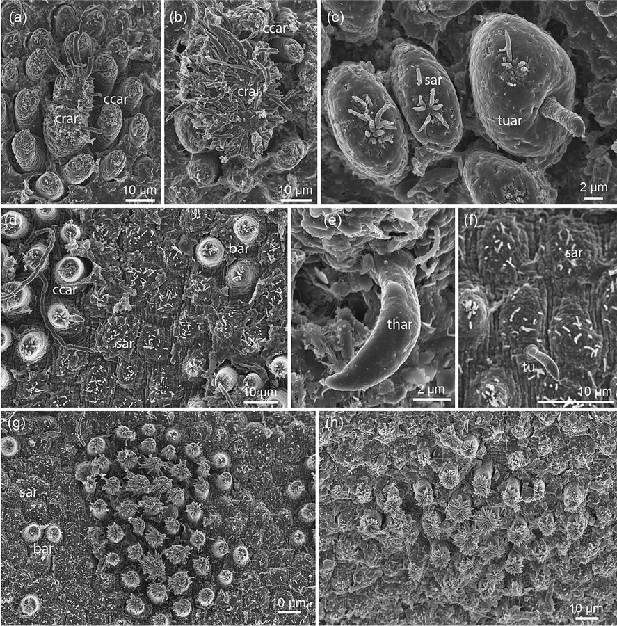

हॉर्सहेयर वर्मHorsehair Worm
Chordodes · Chordodidae · SFL-0014

- Scientific name वैज्ञानिक नाम
- Chordodes Wallet, 1844
- Family कुल
- Chordodidae
- Hindi हिंदी
- हॉर्सहेयर वर्म
- Local names स्थानीय नाम
- horsehair worm, horse hair worm, gordian worm, hair worm
- Status here यहाँ की स्थिति
- native
- Movement आवागमन
- Resident, here all year
- IUCN IUCN
- not evaluated
- Review समीक्षा
- audited and independently read
When to look कब देखें
Present all year. साल भर मौजूद।
Uses and possibilities उपयोग और संभावनाएँ
Drawn from the documented uses in the profile below, where each is labelled traditional, current or a research lead. All uses →
हॉर्सहेयर वर्म / Horsehair Worm
Chordodes Wallet, 1844 — Chordodidae
हॉर्सहेयर वर्म — यह एक बहुत लंबा, बहुत पतला, काली-भूरी कीड़े जैसी वस्तु है जो पानी में पाई जाती है। यह तार जैसी दिखती है — बस एक सीख की तरह, शायद आधा मीटर लंबी, लेकिन मोटाई में महज़ एक मिलीमीटर। यह एक परजीवी है जो जंगली कीड़ों (जैसे टिड्डों और झींगुरों) के पेट में छिपी रहती है। परजीवी अपने मेज़बान के दिमाग़ को नियंत्रित करता है और उसे पानी में कूदने के लिए मजबूर करता है। फिर पानी में पहुँचते ही परजीवी बाहर निकल जाती है और कीड़ा मर जाता है। यह प्रकृति का सबसे अजीब और डरावना नियंत्रण है।
Quick Identification त्वरित पहचान
| Feature | Description |
|---|---|
| Size | 10–70 cm long (much longer than host); only 1–3 mm in diameter |
| Colour | Dark brown, black, or yellowish-brown; uniform colour |
| Body shape | Extremely slender, thread-like, cylindrical |
| Texture | Smooth, slightly wrinkled; no scales or obvious segmentation |
| Ends | Both ends rounded and simple; no prominent sensory organs |
| Movement | In water, forms coils and knots; on land, moves in writhing motions |
| Habitat | Found in water, mud, and inside insects; solitary or in coiled masses |
Field tip: In ponds, streams, and wet areas, look for extremely thin, dark, thread-like creatures. Horsehair worms may appear as tangled masses of thin "threads" in water, resembling coiled hair. They are much longer relative to their diameter than any other common animal. If found, they are almost always in water or in moist conditions. The extreme thinness is the diagnostic feature.
हिंदी — कैसे पहचानें: बहुत लंबा, बहुत पतला, जैसे काली सीख या सूई। पानी या गीली जगह में कुंडली मारकर पड़ा होता है। कीड़े के पेट में छिपा होता है।
Morphology आकारिकी
Biometrics (adult specimens of Chordodes):
| Measurement | Range |
|---|---|
| Adult length | 10–70 cm |
| Adult diameter | 1–3 mm |
| Larval length | <0.5 mm |
| Larval diameter | <0.1 mm |
Body structure: The body is a simple cylinder, consisting of a single unbranched tube. The outer integument (cuticle) is thick and fibrous. Internally, the body consists of four or more longitudinal muscle bands separated by narrow connective tissues. The digestive and reproductive systems are reduced or vestigial; adult horsehair worms do not feed (the gut may be completely absent or degenerate).
Ends: Both anterior and posterior ends are blunt and simple, without prominent sensory organs.
Sensory system: Very simple; the organism relies on chemoreception and possibly mechanoreception. Vision is absent; eyes are absent.
Reproductive organs: Males possess a simple reproductive system with gonads; females possess ovaries. Copulation occurs in water. The female lays long strands of eggs encased in mucus.
Larval stage: Extremely small (less than 1 mm), the larva is encased in a tough, chitinous shell (acanthor) and must be ingested by a suitable insect host. Upon ingestion, the larva penetrates the insect gut and settles in the haemocoel (body cavity), where it grows within the host.
हिंदी: शरीर एक खोखली सीख की तरह। पेशियाँ और पाचन तंत्र सरल। पानी में अंडे देता है लंबी लड़ियों में। बच्चा कीड़े के पेट में बढ़ता है।
Behaviour & Ecology व्यवहार और पारिस्थितिकता
Parasitoid of insects. Chordodes species are parasitoids of freshwater insects, particularly orthopterans (grasshoppers and crickets) and other invertebrates. The life cycle begins when insects feed on vegetation or detritus containing horsehair worm eggs or larvae. Upon ingestion, the larva penetrates the insect gut and enters the haemocoel, where it grows rapidly.
Host manipulation and behaviour change. One of the most remarkable aspects of Chordodes parasitism is the manipulation of host behaviour. The parasitoid influences the behaviour of its host insect, causing it to seek water even when it normally avoids it. This is achieved through chemical or neurological manipulation, though the exact mechanism remains poorly understood. When the parasitised insect approaches water, the horsehair worm exits the host through the abdomen, rupturing the host in the process and killing it. The worm then develops to adulthood in the water.
Development in host. The larva grows within the host insect over a period of weeks to months, consuming the host's fat body (stored nutrients) and other tissues while avoiding vital organs. The parasitised insect remains alive until the worm exits, though its behaviour and physiology are altered.
Adult life in water. Upon exit, the adult horsehair worm lives in freshwater habitats, reproducing and mating. The worm itself does not feed; it survives on stored nutrients accumulated during the larval stage. The adult stage may last weeks to months.
Population ecology. In regions where suitable insect hosts are abundant, horsehair worm populations can be common. The worms form tangled masses in water, and mass emergences (simultaneous exits from hosts) can result in dense concentrations of adult worms in small pools or streams.
हिंदी: कीड़े के पेट में बढ़ता है, जिंदा रहते हुए। कीड़े के दिमाग़ को नियंत्रित करता है, पानी की ओर ले जाता है। पानी में घुसते ही बाहर निकल जाता है, कीड़ा मर जाता है।
Life Cycle / Phenology जीवन चक्र
| Stage | Duration | Environment / Host |
|---|---|---|
| Eggs in water | 2–4 weeks | Laid in water by females; form mucous strands |
| Eggs/larvae free-living | Days to weeks | In water and soil; waiting for insect ingestion |
| Larva (acanthor) | Months | Inside insect host; feeding and growth |
| Parasitic larva in host | 2–12 months (depending on temperature) | Inside insect haemocoel |
| Exit from host | Hours to days | Parasitised insect approaches water; worm emerges |
| Adult in water | Weeks to months | Mating and reproduction in freshwater habitats |
Seasonal pattern in eastern UP:
- May–August: Egg laying and larval development in insects
- August–October: Mature parasites exit hosts; mass emergences common
- November–March: Adult reproduction in water; cooler water slows development
- March–May: Lower abundance; many insects and worms in dormancy or diapause
हिंदी: अंडा → लार्वा → कीड़े में → बड़ा होना → पानी में निकलना → अंडा देना। पूरा चक्र साल भर।
Host Plants or Prey आहार
Obligate insect parasitoid:
- Grasshoppers and crickets (Orthoptera) — primary hosts
- Cockroaches — occasional hosts
- Other insects — occasionally parasitised
- The larva feeds on host tissues; adult does not feed
The horsehair worm relies entirely on insects for its larval development and nutrition; it has no other food source. Different Chordodes species show varying degrees of host specificity.
Predators / Natural Enemies शत्रु
- Fish: Freshwater fish consume adult worms in water
- Aquatic birds: Wading birds and ducks consume worms
- Parasites: Some parasitic fungi and bacteria infect worms
- Desiccation: Adult worms cannot survive dry conditions; drought is a natural control
Agricultural / Human Relevance कृषि प्रासंगिकता
Biological control potential. Chordodes species are natural parasitoids of pest insects, particularly grasshoppers and crickets. In regions where these insects are agricultural pests, horsehair worms provide a degree of natural biocontrol. However, the efficacy as a pest control agent is limited because the worms do not kill the host until the end of the parasitic period; by then, crop damage may already be extensive.
Ecological indicator. The presence of horsehair worms in water bodies indicates a healthy insect community and intact trophic interactions. The presence of parasitised insects (those displaying abnormal water-seeking behaviour or those found dead after worm emergence) is an indicator of ecosystem function.
Human health relevance. Chordodes species do not parasitise humans and pose no direct health threat. Humans are not suitable hosts due to differences in anatomy and physiology from insects.
Scientific interest. The behaviour-manipulating capability of horsehair worms has attracted significant research attention from behavioural ecologists and parasitologists. The worms are model organisms for studying parasite-host coevolution and neural manipulation.
हिंदी: कीड़ों को नियंत्रित करता है, पर खेती में मदद सीमित। पानी में होना एक अच्छा संकेत है कि पारिस्थितिकी स्वस्थ है।
Expected Locally स्थानीय रूप से अपेक्षित
Not a field record. Written from published accounts for eastern Uttar Pradesh. No confirmed local sighting yet — if you have seen it, that is what the atlas needs.
अभी तक स्थानीय पुष्टि नहीं। यह विवरण प्रकाशित स्रोतों से है, किसी अवलोकन से नहीं।
Expected in freshwater ponds, streams, and wet areas of Basti district, particularly during the monsoon season (June–October) when insect host density is high. Adult worms are most commonly encountered in water during or immediately after monsoon. A confirmed local record would be an adult specimen collected from a freshwater habitat in the district, preserved in 70% ethanol, and identified to genus level based on morphology.
Distribution वितरण
Global range: Found on all continents except Antarctica in freshwater habitats. Tropical and temperate regions; more diverse in tropical areas.
In India: Present in freshwater habitats throughout the subcontinent.
In Uttar Pradesh: Expected in freshwater habitats across all districts, particularly in regions with high insect diversity.
In Basti district / eastern UP: Likely present in freshwater bodies and wet areas; no confirmed local records.
Research Questions शोध प्रश्न
- What is the diversity of Nematomorpha (horsehair worms) in freshwater habitats of Basti district? / बस्ती की नदियों में कितनी जातियाँ की हॉर्सहेयर वर्म हैं? — Survey freshwater habitats during monsoon; collect and identify specimens.
- Which insect species serve as hosts for Chordodes in local freshwater ecosystems? — Examine parasitised insects found in the field; dissect to identify worm species and measure prevalence.
- What is the mechanism of host behaviour manipulation, and does it involve specific neuroactive compounds? — Conduct experiments on parasitised insects; measure brain chemistry and behavior change.
- How does water temperature and seasonality affect the development rate and reproductive output of Chordodes? — Maintain infected insects at different temperatures; measure development duration.
- Do Chordodes worms reduce pest insect populations sufficiently to provide agricultural benefit? — Survey grasshopper populations and parasitism rates on crops; correlate with crop damage.
Similar Species मिलती-जुलती प्रजातियाँ
| Species | How to tell apart | हिंदी |
|---|---|---|
| Parasitic copepods or other thin parasites | Under magnification, show different body segmentation and appendages | सूक्ष्मदर्शी में अलग दिखते हैं |
| Plant roots or root hairs | Lack the smooth, uniform body; show cellular structure and branches | पौधों की जड़ें — शाखाएँ होती हैं |
| Extremely thin parasitic nematodes | Much shorter (<1 cm); found in soil or inside arthropods; different mouth structure | पतले कीड़े — बहुत छोटे होते हैं |
Field rule: An extremely thin (1–3 mm), dark, thread-like worm 10–70 cm long, found in water or in coiled masses, often alongside parasitised insects, is a horsehair worm; microscopic examination of the cuticle and body wall confirms genus-level identification.
Taxonomy & Classification वर्गीकरण
Original description. Described by Wallet in 1844. The genus Chordodes (from Greek chorde, cord, and -odes, resembling) refers to the cord-like appearance of the worm.
Subspecies. No subspecies recognised; Chordodes is treated as a genus with numerous species. Specific identification requires detailed morphological and molecular analysis.
Family and order placement. Phylum Nematomorpha (horsehair worms and Gordian worms), class Gordioida, order Gordioidea, family Chordodidae.
Phylogenetic notes. Nematomorpha is an ancient phylum with a fossil record extending back to the Carboniferous. Horsehair worms are sister group to nematodes (roundworms) and share a common ancestor. The behaviour-manipulating parasitism of Nematomorpha is thought to be a derived trait evolving from free-living ancestors.
IUCN status rationale. Not evaluated. No conservation concern; widespread in suitable freshwater habitats.
Photo Gallery फोटो गैलरी
Photos needed आवश्यक फोटो
- [ ] Adult specimen in water, showing length and thinness (पानी में, लंबा पतला)
- [ ] Coiled/knotted mass of worms (कुंडली मारे हुए)
- [ ] Parasitised insect (कीड़े के पेट में)
No photos yet — add field photos to media/species/horsehair_worm/ and run node scripts/sync_photos.js.
References संदर्भ
- Wallet, C. (1844). Histoire naturelle des vers parasites. Baillière, Paris. [original genus description]
- Poinar, G.O. (1991). The biological control potential of nematomorphans. Journal of Nematology 23: 430–438.
- Schmidt-Rhaesa, A. (2002). The biology of horsehair worms (Nematomorpha). Advances in Parasitology 51: 1–213. [comprehensive review]
- Hanelt, B., Thomas, F. & Schmidt-Rhaesa, A. (2005). Biology of the Phylum Nematomorpha. Advances in Parasitology 59: 243–305.
- Harland, C., Villani, M.G. & Platzer, E.G. (1995). Bioassay for entomopathogenic parasites in soil fauna. Journal of Economic Entomology 88: 324–329.
- GBIF Occurrence Data — Chordodes, India (2024).
Source file: species/fauna/soil_fauna/horsehair_worm.md